Next: 臨床試験への混合効果モデル：正規線形回帰モデル Up: 経時的繰り返し測定デザイン Previous: 分散分析モデルから治療効果を学ぶ
個体 における
における 時点での測定データについて，
時点での測定データについて，
| 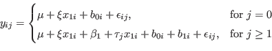 |
ただし，
| 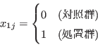 |
このとき， と
と の相関係数
の相関係数 は，
は，
 |
|||
 |
ただし，
ANCOVA型モデルの がRMモデルの に相当する，というのがよくわからない。別に そのままでいいような気がするのだが。
RMモデルにおける
である。
ANOVAモデルにおける
なのであるから， にはベースラインデータの個体差は含まれていないはず。 むしろ，ベースライン時点での個人差は 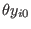 に全て持っていかれているのでは？
ANCOVA型モデルの場合，確率変数が説明変数に入ってくるが，これを計画行列のようにみなすことで推定上の問題は生じないのだろうか？

各時点 におけるCFBの群間差を用いて，
におけるCFBの群間差を用いて，
と推定すると， 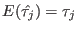 と不偏推定量になる。 その分散は
となる。
一方，各時点 における観測値そのものを用いて，
における観測値そのものを用いて，
とすると， 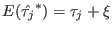 となり，RCTのもとでは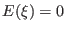 であるから不偏推定量となる。 この分散は
となる。 複合対称性のもとでは（すなわち ）， Var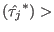 Var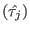 となるのは 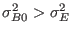 すなわち式(4.1)より 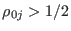 の場合である。
| 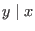 | 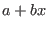 | ||
| 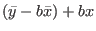 | |||
| 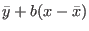 | |||
| 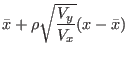 |
ベースラインデータを所与としたときの治療期間データの条件付き期待値を考えると，
| 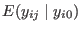 | 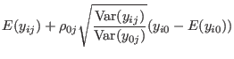 | ||
| 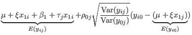 | |||
| 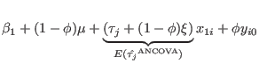 |
となる。
すなわち， と
のいずれを結果変数とした場合も，ANCOVAによる治療効果の期待値は
と
のいずれを結果変数とした場合も，ANCOVAによる治療効果の期待値は
となり，RCTのもとでは より不偏となる。
ここで， が既知であれば，
が既知であれば，
と推定すればよい。 すると，
となる。
すなわち，
Taichi Okumura